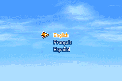
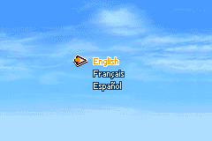

Surf's Up (Europe) (En,Fr,Es)
EEPROM 4K Save Format Mapped (Family Spec) 💾 MultiBoot
Cartridge Identity
- Game Code
BXUP(FamilyBXU)- Header Title
SURFS UP- Maker / Revision
41/ rev0- ROM Size
- 8.0 MiB (8,388,608 B)
- Save Media
EEPROM 4K- SHA-256
740602b5d6c4bce28f6869d10d412f525a75bff7f8882ffcfb22a7cc864ba4e6- Engine / SDK Group
comm-019(15 families)
Screenshots


Link Cable & Multiplayer Communications
This title contains detected communication capabilities: 💾 MultiBoot.
Detailed protocol specifications, SIO registers, Joybus commands, and MultiBoot sequences are documented in the Link & Multiplayer Reference.
- Single-Cart MultiBoot
- Single-Cartridge MultiBoot (Download Play) client/server handler · Thumb SWI 0x25 (
0xDF25):0x0a510c,0x16e862,0x399542,0x55c05c
Battery Save Format Specification (Family Shared)
This release shares its save architecture with canonical family reference Surf's Up (Europe) (En,Fr,De,Es,It) (Family
BXU).
Open Family Save Format Spec (BXUX)Download save-format.json
- Canonical Specification
BXUX· 3 mapped fields · 0 verified checksum(s) · Confidence: HIGH- gbakit Built-In Support
- Built-in (BXUX)
gbakit save verify BXUX save.sav
gbakit save decode BXUX save.sav
gbakit save fix BXUX damaged.sav -o repaired.savObserved Battery Save Layout
- Fill Byte & Active Size
0x00fill · 52–52 / 512 B active (entropy 1.85 bits/B)- Active Offset Ranges
0x2–0x3,0x5–0x7,0x7A–0x7B,0x7D–0x7F,0xF2–0xF3,0xF5–0xF7,0x16A–0x16B,0x16D–0x16F, +1 more (9 total)- ASCII Magic / Headers
- None detected
- Observed Variable Regions
- 0 bytes across 0 spans: None
- Candidate Checksum/Counter Spans
- None
Asset Map (formatkit.asset-map.v1)
Download BXUE-r0-dc4c34baf53a64a0.asset-map.json.gz (117,512 B (114.8 KiB)) Verified PASS · 33.67% coverage
| Metric | Bytes / Value | Entries |
|---|---|---|
| Identified | 142,735 B (139.4 KiB) (1.70%) | 984 |
| Mapped | 0 B (0.00%) | 0 |
| Opaque | 2,681,340 B (2.56 MiB) (31.96%) | 1 |
| Unknown | 5,564,533 B (5.31 MiB) (66.33%) | 914 |
| Total ROM Size | 8,388,608 B (8.00 MiB) | 1,899 |
| Coverage % | 33.67% | — |
| Entries w/ Code Refs | 1,021 / 1,899 (53.77%) | — |
Top Identified Formats: compress.bios-lz77 (12 · 84,615 B (82.6 KiB)) · gfx.gba-palette (970 · 53,600 B (52.3 KiB)) · audio.m4a-song-table (1 · 4,328 B (4.2 KiB)) · gba.rom-header (1 · 192 B)
Largest unknown Extents (Headerless / Custom Asset Candidates)
| Offset | Size | Shannon Entropy | Code Refs |
|---|---|---|---|
0x0025C840 | 979,992 B (957.0 KiB) | 7.430 bits/B | 0 |
0x0034BE58 | 709,272 B (692.6 KiB) | 7.154 bits/B | 0 |
0x00502428 | 270,712 B (264.4 KiB) | 6.854 bits/B | 0 |
0x004C23A0 | 262,248 B (256.1 KiB) | 5.852 bits/B | 0 |
0x001C80DC | 252,740 B (246.8 KiB) | 6.387 bits/B | 0 |
gzip -dk BXUE-r0-dc4c34baf53a64a0.asset-map.json.gz && gbakit map verify rom.gba BXUE-r0-dc4c34baf53a64a0.asset-map.json
gbakit assets export rom.gba --asset-map BXUE-r0-dc4c34baf53a64a0.asset-map.json -o out/Text, Fonts & Scene Data
- Primary Text Encoding
- Shift-JIS (uncompressed) (
32ASCII strings ·33Shift-JIS runs) - Font & VWF Indicators
- VWF Width Table 1bpp Font · BIOS SWIs: BitUnPack
0x10:7· LZ770x11/12:8· Huffman0x13:5· RLE0x14/15:7 - Scene & Packaging
12ROM pointer tables (≥32 entries,2≥200) ·32relativeu32TOCs ·190OAM metasprite hits
Hardware MMIO Subsystems
ppu_display0x8023618,0x8023758,0x8024350,0x8042368,0x8043bb0,0x8048ff0
Regional Variants & Revisions (Family BXU)
- Surf's Up (Europe) (En,Fr,De,Es,It) (
BXUX, 8 MiB) - Surf's Up (USA) (En,Fr,Es) (
BXUE, 8 MiB)